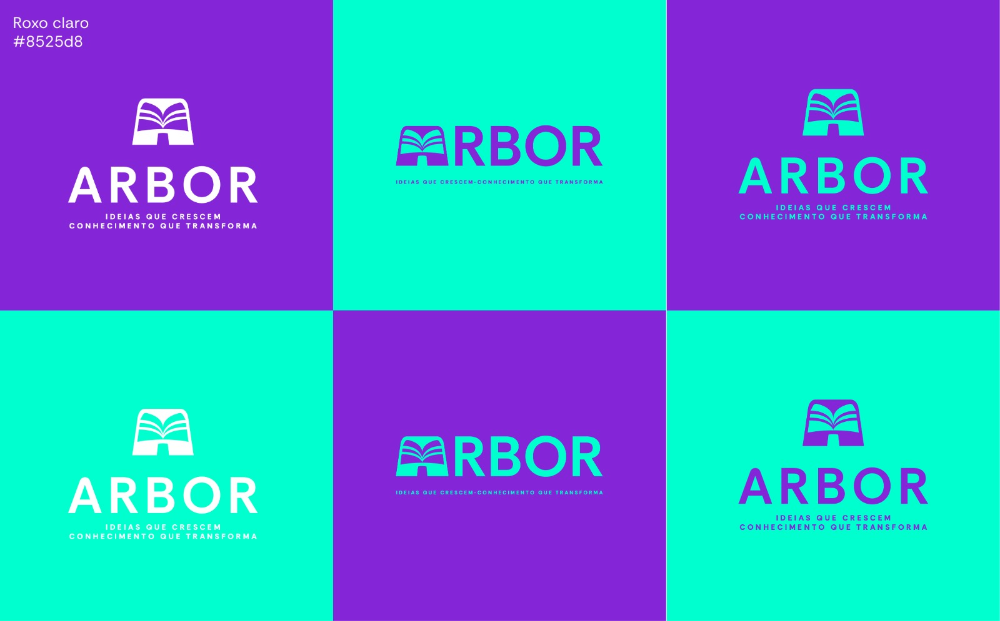
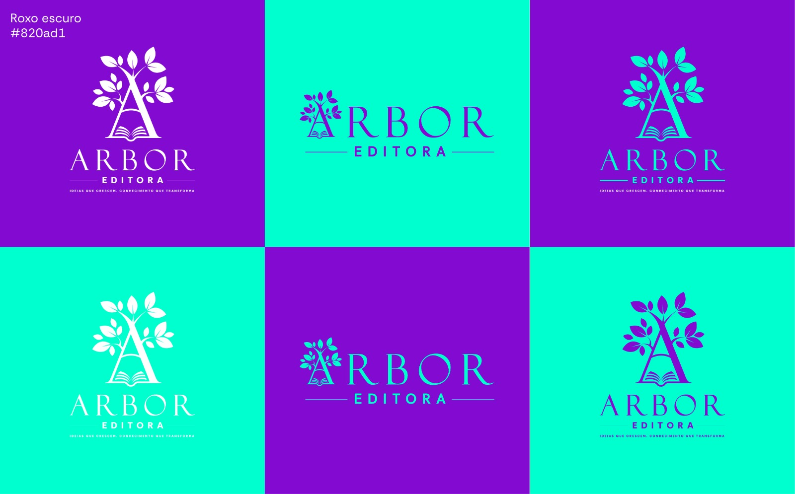

Variantes da Logo
Variantes da logo da Arbor Editora — pranchas com as combinações da marca sobre as cores oficiais.
img/variante1.jpeg
Símbolo do livro em seis combinações sobre roxo #820ad1 e verde da marca.

img/variante2.jpeg
Símbolo do livro aberto em seis combinações sobre roxo claro #8525d8 e verde.

img/variante3.jpeg
Mesmas combinações aplicadas sobre fundos em degradê roxo/verde.